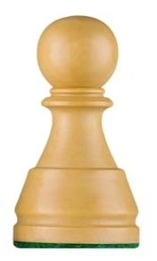

El peon
El peón es la pieza más común y básica del ajedrez. Se mueve hacia adelante una casilla, y captura diagonalmente una casilla hacia adelante. Tiene un valor material de 1 punto y puede promoverse a otra pieza (excepto el rey) al llegar a la última fila del tablero.